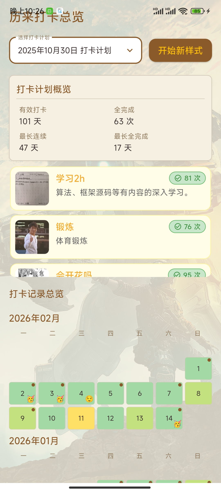
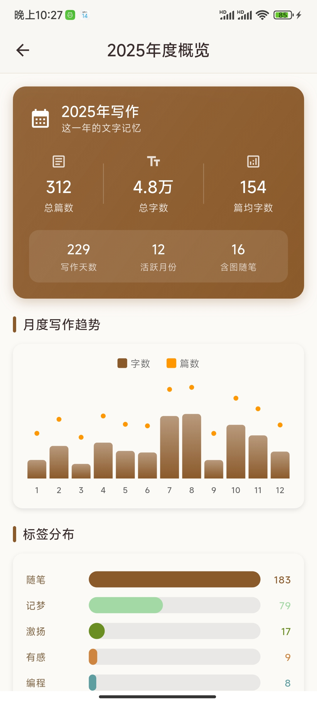
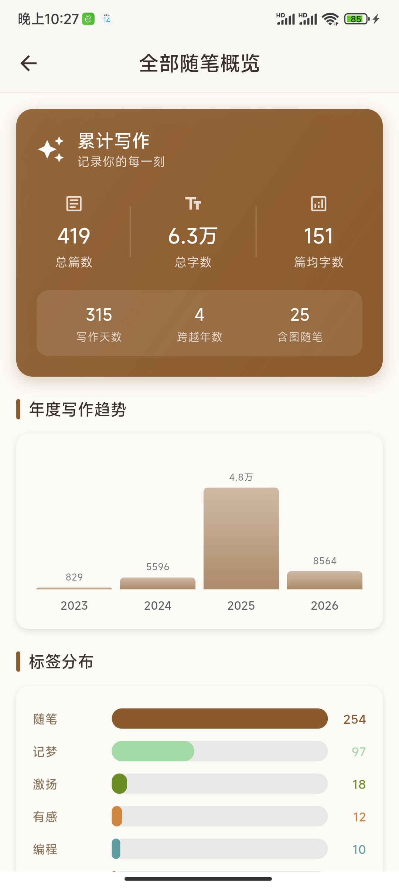
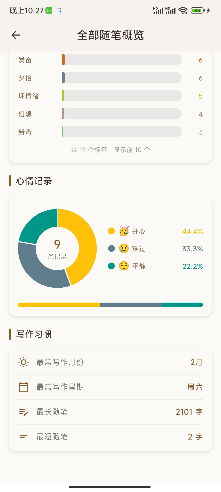
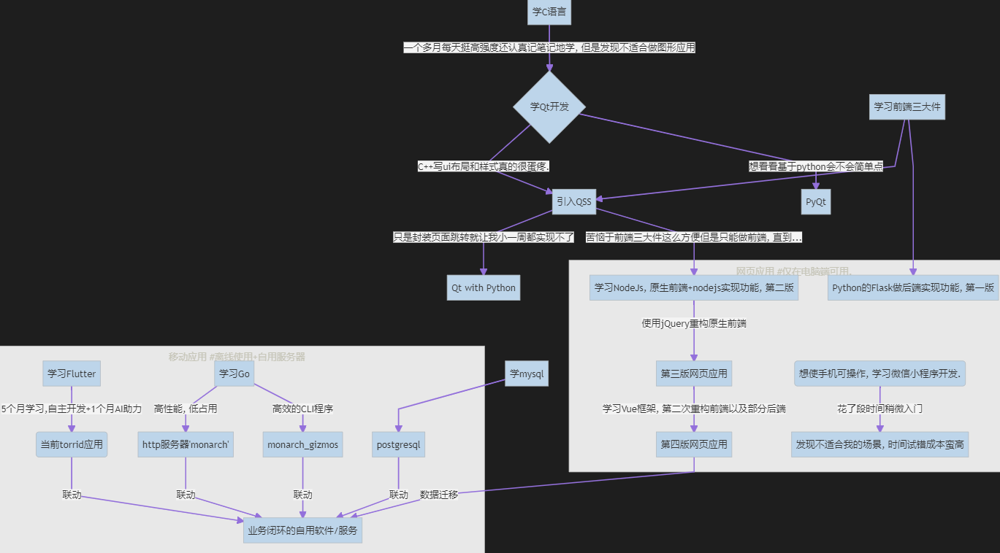

项目文档展示
TORRID文档
仓库地址: zx1360/Torrid: 仅安卓端的自用多功能软件. 打卡, 随笔, 看漫画, 与monarch项目联动查看pc库存和媒体文件等功能.
应用信息
关于TORRID
一、开源
[zx1360/Torrid][https://github.com/zx1360/Torrid二、数据安全
隐私
所有用户数据存于本地而不会被外部获取
备份
可通过与我另外一个库中开源软件
monarch联动, 实现备份到pc上.格式为json, 适合阅读/修改.
三、应用干净
卸载应用即删除所有数据不留痕. 不保留任何配置信息和数据.
==因此, 未备份的数据会在应用卸载后真正消失.==
- 打卡/随笔等数据保存于内部应用私有目录
- 相应的图片等文件保存于外部应用私有目录
PS: 除了某些页面手动点击"保存"按钮后, 保存在外部公共空间. (为了保存的图片能够被手机自带的相册识别到).
四、后台友好
CPU友好: 只有用户操作才会进行响应的操作.
处于后台时不会运行其他行为. (指仍旧活跃的后台代码)
**内存友好: **
不知道, 感觉应该不占内存.
注意事项
真正把想法做出成品来才感受得到, 要做到"人性化"真的是费时又费力. 但这一点又恰是最影响使用体验的. 请避免以下行为防止应用出错.
(我没测试过会发生什么情况).
- 不要随意删改应用下的所有文件名/目录名. (不过手机一般操作不到应用目录).
- 不要进行奇怪的操作查看有无奇怪的反应.
- …
另外说明
本应用是出于自用+练手目的制作的, 目标场景以我的需求出发. 比如我喜欢做任务一样地每天做点事然后回顾的时候有成就感, 于是有了积微页来打卡. 喜欢每天记点东西就有了随笔页写东西.
25年八月中旬了解到flutter开始到目前26年二月中旬, 一旦入门感觉写起来还挺有意思的, 甚至当初开发随笔页时十多天小半个月还没弄出来虽然挫败但是最终做出也挺有乐趣的. 另外也略微了解到了应用开发相关知识感觉受益匪浅. 不过到目前库存页开发完毕之后应该就搁置仅作维护以及偶尔优化了. 原因有二:
- 一是确实我所期望的**==满足我个性需求的好用的小工具应用==**差不多完善了.
- 二是最近一个月来用教育福利获得的github copilot额度开发, 效果极好, 甚至已经到了额度用完就没啥自己手写的想法的程度了.
不得不说, claude opus真王朝了吧部分功能**(如库存页, 漫画页, 藏品页以及本地数据的备份和同步)需要搭配我的另一个项目monarch**使用, 他是一个运行在电脑上的Go程序, 用以处理本应用的http请求.
页面介绍
主页
可自定义主页背景, 默认简约渐变背景
积微页
设置若干任务然后坚持每天完成!

随笔页
写日记、记录回忆、一天的经历等, 并打上标签, 可追加留言.



库存页
待完成, (借助自建服务器)
阅读页
借助公共在线api, 提供即时信息如每日精炼新闻, epic免费游戏, 各app的热搜.
其他页
漫画页
本地或在线阅读漫画 (借助自建服务器)
藏品页
回顾以往自己的媒体文件, 标记删除以及打标签等 (借助自建服务器)
用户页
偏好设置
设置主页和侧边菜单的背景, 以及设置侧边菜单的顶部格言部分.
数据备份 (借助自建服务器)
设定服务端的地址端口, 备份/同步数据.
反馈问题
不一定会看, 也不一定会改, 因为我这么长时间用下来没问题挺顺手的 :D
3039328600@qq.com
MONARCH文档
仓库地址: zx1360/monarch: Go编写的http服务器, 用以支持我另一个项目’torrid’的网络请求.
关于MONARCH
GO编写的http服务器, 用以支持另一个项目TORRID的网络请求.一、开源
zx1360/monarch: Go编写的http服务器, 用以支持我另一个项目’torrid’的网络请求.
二、高性能 无感知后台运行
由于使用Go编写, 相比java/python开发的http服务器占用内存少, 响应高效, 后台友好.
可以编写vbs脚本放入开机启动目录以无窗口模式静默运行, 平时几乎不占用性能损耗
三、应用干净
一体式以独立目录存在, 所有数据均不存入C盘的文档目录之类的, 仅存于所在的目录中, 可方便地彻底删除.
==因此, 应当自行做好数据的管理防止丢失数据==
依赖的数据库
PostgreSQL18.0
如果要正确运行还需本地运行一个postgres数据库, (自用场景后台运行可忽略性能占用). 下面附上用到的数据表结构以及触发器定义.
漫画页数据库
建表
1 2 3 4 5 6 7 8 9 10 11 12 13 14 15 16 17 18 19 20 21 22 23 24 25 26 27 28 29 30 31 32 33 34 35 36 37 38 39 40 41 42 43 44 45-- 漫画主表（存储单本漫画信息） CREATE TABLE IF NOT EXISTS comic_books ( id UUID PRIMARY KEY, title VARCHAR(255) NOT NULL, chapter_count INTEGER NOT NULL DEFAULT 0, image_count INTEGER NOT NULL DEFAULT 0, -- 该漫画总图片数 cover_image TEXT -- 封面图相对路径（第一个章节的第一张图） ); -- 漫画章节表（存储单本漫画的章节信息） CREATE TABLE IF NOT EXISTS comic_chapters ( id UUID PRIMARY KEY, comic_id VARCHAR(64) NOT NULL, dir_name VARCHAR(255) NOT NULL, -- 格式：001_章节名 chapter_index INTEGER NOT NULL, image_count INTEGER NOT NULL DEFAULT 0, FOREIGN KEY (comic_id) REFERENCES comic_books(id) ON DELETE CASCADE ); -- 漫画图片表（存储章节下的图片路径及属性） CREATE TABLE IF NOT EXISTS comic_images ( id UUID PRIMARY KEY, chapter_id VARCHAR(64) NOT NULL, image_path TEXT NOT NULL, sort_num INTEGER NOT NULL, -- 图片排序号（1、2、3...） width INTEGER NOT NULL, -- 图片宽度 height INTEGER NOT NULL, -- 图片高度 FOREIGN KEY (chapter_id) REFERENCES comic_chapters(id) ON DELETE CASCADE ); -- 漫画汇总表（存储所有漫画的统计信息） CREATE TABLE IF NOT EXISTS comic_summary ( id VARCHAR(64) PRIMARY KEY DEFAULT 'comic_total_metadata', title VARCHAR(255) NOT NULL DEFAULT '漫画信息元数据', book_count INTEGER NOT NULL DEFAULT 0, total_chapter_count INTEGER NOT NULL DEFAULT 0, total_image_count INTEGER NOT NULL DEFAULT 0, updated_at TIMESTAMP NOT NULL DEFAULT CURRENT_TIMESTAMP, CONSTRAINT comic_summary_single_row CHECK (id = 'comic_total_metadata') ); -- 章节表：comic_id查询+排序索引 CREATE INDEX if not exists idx_comic_chapters_comic_id ON comics.comic_chapters (comic_id, chapter_index); -- 图片表：chapter_id查询+排序索引 CREATE INDEX if not exists idx_comic_images_chapter_id ON comics.comic_images (chapter_id, sort_num);藏品页数据库
建表
1 2 3 4 5 6 7 8 9 10 11 12 13 14 15 16 17 18 19 20 21 22 23 24 25 26 27 28 29 30 31 32 33 34 35 36 37 38 39 40 41 42 43 44 45 46 47 48 49 50 51 52 53 54 55 56 57 58 59 60 61 62 63 64 65 66 67 68 69 70-- 文件信息表media_assets CREATE TABLE IF NOT EXISTS media_assets ( ID UUID PRIMARY KEY, created_at TIMESTAMPTZ NOT NULL DEFAULT CURRENT_TIMESTAMP,-- 入库时间 updated_at TIMESTAMPTZ NOT NULL DEFAULT CURRENT_TIMESTAMP,-- 修改时间 captured_at TIMESTAMPTZ NOT NULL,-- 优先级: EXIF > 修改时间 > 创建时间 file_path TEXT NOT NULL,-- 存储中的相对路径 thumb_path TEXT,-- 生成的缩略图/封面图相对路径 preview_path TEXT,-- 生成的预览图相对路径 hash BYTEA NOT NULL UNIQUE,-- SHA-256 用于去重 size_bytes BIGINT NOT NULL DEFAULT 0, mime_type TEXT, is_deleted BOOLEAN NOT NULL DEFAULT FALSE, sync_count INTEGER NOT NULL DEFAULT 0,-- 表示该媒体文件记录从移动端被同步到服务端的次数 group_id UUID DEFAULT NULL,-- 指向“主文件”的 ID。如果不为空，代表该文件被捆绑. message TEXT default null, CONSTRAINT fk_group_id FOREIGN KEY ( group_id ) REFERENCES media_assets ( ID ) ON DELETE SET NULL ); -- 为media_assets添加索引 CREATE INDEX IF NOT EXISTS idx_media_assets_sync_captured ON media_assets ( is_deleted, sync_count, captured_at ); CREATE INDEX IF NOT EXISTS idx_media_assets_updated_at ON media_assets ( updated_at );-- 更新日期排序. CREATE INDEX IF NOT EXISTS idx_media_assets_group_id ON media_assets ( group_id );--主文件查询 CREATE INDEX IF NOT EXISTS idx_media_assets_mime_type ON media_assets ( mime_type );--按文件类型排序 -- 标签表tags, 树状结构 CREATE TABLE IF NOT EXISTS tags ( ID UUID PRIMARY KEY, created_at TIMESTAMPTZ NOT NULL DEFAULT CURRENT_TIMESTAMP, updated_at TIMESTAMPTZ NOT NULL DEFAULT CURRENT_TIMESTAMP, NAME TEXT NOT NULL, parent_id UUID,-- 记录其父标签, 根节点为 Null. full_path TEXT,-- 冗余字段用于快速搜索, 例如 "Family/2023/Xmas"). 级联更新. CONSTRAINT fk_parent_id FOREIGN KEY ( parent_id ) REFERENCES tags ( ID ) ON DELETE CASCADE, CONSTRAINT uk_tag_name_parent UNIQUE ( NAME, parent_id ) ); -- 为tags添加索引 CREATE INDEX IF NOT EXISTS idx_tags_parent_id ON tags ( parent_id );-- 按父标签查询子标签 CREATE INDEX IF NOT EXISTS idx_tags_full_path ON tags ( full_path );-- 按完整路径快速搜索 -- 文件标签关联表media_tag_links CREATE TABLE IF NOT EXISTS media_tag_links ( media_id UUID, tag_id UUID, PRIMARY KEY ( tag_id, media_id ), CONSTRAINT fk_media_id FOREIGN KEY ( media_id ) REFERENCES media_assets ( ID ) ON DELETE CASCADE, CONSTRAINT fk_tag_id FOREIGN KEY ( tag_id ) REFERENCES tags ( ID ) ON DELETE CASCADE ); -- 为media_tag_links添加索引 CREATE INDEX IF NOT EXISTS idx_media_tag_links_media_id ON media_tag_links ( media_id );-- 按媒体ID查询关联媒体触发器
触发器-自增同步次数
1 2 3 4 5 6 7 8 9 10 11 12 13 14 15 16 17 18 19 20 21 22 23-- 1. 创建触发器函数：仅在未显式更新 sync_count 时自动自增 CREATE OR REPLACE FUNCTION increment_sync_count() RETURNS TRIGGER AS $$ BEGIN -- 只在记录被更新时执行（排除 INSERT 场景） IF TG_OP = 'UPDATE' THEN -- 核心逻辑：检查是否显式更新了 sync_count 字段 -- (OLD.sync_count IS DISTINCT FROM NEW.sync_count) 表示字段值被主动修改过 -- 取反后，仅当字段未被显式更新时才自增 IF NOT (OLD.sync_count IS DISTINCT FROM NEW.sync_count) THEN NEW.sync_count = OLD.sync_count + 1; END IF; END IF; RETURN NEW; END; $$ LANGUAGE plpgsql; -- 2. 重建触发器（如果触发器已存在，先删除再创建） DROP TRIGGER IF EXISTS trigger_media_assets_sync_count ON media_assets; CREATE TRIGGER trigger_media_assets_sync_count BEFORE UPDATE ON media_assets FOR EACH ROW EXECUTE FUNCTION increment_sync_count();触发器-更新时间
1 2 3 4 5 6 7 8 9 10 11 12 13 14 15 16 17-- 创建通用的updated_at自动更新触发器函数 CREATE OR REPLACE FUNCTION update_updated_at_column ( ) RETURNS TRIGGER AS $$ BEGIN NEW.updated_at := CURRENT_TIMESTAMP; RETURN NEW; END; $$ LANGUAGE plpgsql SECURITY DEFINER SET search_path = PUBLIC; -- 为media_assets表添加updated_at触发器 CREATE TRIGGER trigger_media_assets_updated_at BEFORE UPDATE ON media_assets FOR EACH ROW EXECUTE FUNCTION update_updated_at_column ( ); -- 为tags表添加updated_at触发器 CREATE TRIGGER trigger_tags_updated_at BEFORE UPDATE ON tags FOR EACH ROW EXECUTE FUNCTION update_updated_at_column ( );触发器-tags路径级联更新
1 2 3 4 5 6 7 8 9 10 11 12 13 14 15 16 17 18 19 20 21 22 23 24 25 26 27 28 29 30 31 32 33 34 35 36 37 38 39 40 41 42 43 44 45 46 47 48 49 50 51 52 53 54 55 56 57 58 59 60 61 62 63 64 65 66 67 68 69 70 71 72 73 74 75 76 77 78 79 80 81 82 83 84 85 86 87 88 89 90 91 92 93 94 95 96 97 98 99 100 101 102 103 104-- ============================================ -- 1. 先删除可能存在的旧触发器 -- ============================================ DROP TRIGGER IF EXISTS trg_tags_before_ins_upd ON gallery.tags; DROP TRIGGER IF EXISTS trg_tags_after_upd ON gallery.tags; -- ============================================ -- 2. 创建函数（指定 schema 为 gallery） -- ============================================ CREATE OR REPLACE FUNCTION gallery.tags_compute_full_path(p_name TEXT, p_parent_id UUID) RETURNS TEXT LANGUAGE plpgsql STABLE AS $$ DECLARE v_parent_path TEXT; BEGIN IF p_parent_id IS NULL THEN RETURN p_name; END IF; SELECT full_path INTO v_parent_path FROM gallery.tags WHERE id = p_parent_id; IF v_parent_path IS NULL THEN RETURN p_name; END IF; RETURN v_parent_path || '/' || p_name; END; $$; -- ============================================ -- 3. 递归级联更新子节点 -- ============================================ CREATE OR REPLACE FUNCTION gallery.tags_cascade_update_full_path(p_id UUID) RETURNS VOID LANGUAGE plpgsql AS $$ DECLARE v_child RECORD; v_new_path TEXT; BEGIN FOR v_child IN SELECT id, name FROM gallery.tags WHERE parent_id = p_id LOOP SELECT full_path || '/' || v_child.name INTO v_new_path FROM gallery.tags WHERE id = p_id; UPDATE gallery.tags SET full_path = v_new_path, updated_at = CURRENT_TIMESTAMP WHERE id = v_child.id; PERFORM gallery.tags_cascade_update_full_path(v_child.id); END LOOP; END; $$; -- ============================================ -- 4. BEFORE INSERT/UPDATE 触发器函数 -- ============================================ CREATE OR REPLACE FUNCTION gallery.tags_before_ins_upd() RETURNS TRIGGER LANGUAGE plpgsql AS $$ BEGIN NEW.full_path := gallery.tags_compute_full_path(NEW.name, NEW.parent_id); NEW.updated_at := CURRENT_TIMESTAMP; RETURN NEW; END; $$; -- ============================================ -- 5. AFTER UPDATE 触发器函数 -- ============================================ CREATE OR REPLACE FUNCTION gallery.tags_after_upd() RETURNS TRIGGER LANGUAGE plpgsql AS $$ BEGIN IF OLD.name IS DISTINCT FROM NEW.name OR OLD.parent_id IS DISTINCT FROM NEW.parent_id THEN PERFORM gallery.tags_cascade_update_full_path(NEW.id); END IF; RETURN NULL; END; $$; -- ============================================ -- 6. 绑定触发器 -- ============================================ CREATE TRIGGER trg_tags_before_ins_upd BEFORE INSERT OR UPDATE OF name, parent_id ON gallery.tags FOR EACH ROW EXECUTE FUNCTION gallery.tags_before_ins_upd(); CREATE TRIGGER trg_tags_after_upd AFTER UPDATE OF name, parent_id ON gallery.tags FOR EACH ROW EXECUTE FUNCTION gallery.tags_after_upd();其他说明
更详细的用法参考
TORRID应用的使用:
[zx1360/Torrid][https://github.com/zx1360/Torrid
MONARCH_GIZMOS文档
仓库地址: zx1360/monarch_gizmos: 另一个项目’monarch’的辅助CLI命令行程序, 处理原始数据并写入本地数据库以供http服务器使用.
关于GIZMOS
Go程序, 主要承载另一个项目
MONARCH的处理.简单说就是处理原始数据并写入数据库, 使得monarch能够响应.
- 实现漫画文件的检索写入本地postgres数据库.
- 本地媒体文件遍历写入本地postgres数据库, 并整理归档. 以及软删除客户端响应的被标记为删除的文件.
其他说明
虽然与monarch同为Go编写且完全与其联动依赖, 但不与monarch集成而是独立为一个程序主要考虑这些都是偶尔才用到的、一次性的使用场景.
也许之后会集成, 再说吧.
重要AI prompt展示
展示理由以及说明
自从25年12月得到github copilot教育福利的每月免费额度后, 渐渐地越来越依赖这个开发, 尤其是之后的claude opus 4.5, 强的离谱, 效果好的离谱.
下面给出一些我开发时经常附上的追加要求, 对于规范他的代码以及避免可能让人恼火的问题挺有帮助的. 以及一些具体需求开发时的对话内容供参考:
提示词经验之谈 (不保真 0v0)
-
⭐当希望ai在你开发到一半的项目上引入新功能/修改现有功能, 加上这么一句能让它动手前对你现有代码理解更深.
你能分析出我现有项目的实现逻辑和把握我的需求吗? 理解之后, 为我...或理解我项目中这个模块的逻辑, 然后按照我的要求... -
⭐在我给出较复杂/较多点的要求或者是基于已有项目进行新增/改动时, 我一般会在最后加上这一段, 否则它似乎很轻易地就会改动原先代码引入错误.
1 2 3 4 5 6必须遵守的要求: 做好相应的适配, ui简约美观, 交互友好. 考虑一些特殊情况, 做好应对防止应用异常. 不对已有功能引入任何破坏性或者可能导致不可预知影响的修改. 修改直到项目无错且能正确按照我的预期运行. 注意代码可维护性. -
一次对话含多个要求时显式表明"1., 2.", 其下的重点要求单独一段而不要与其他要求通过逗号/句号处于同一段:
1 2 3 4 5 6 7 8我希望对于我的打卡和随笔页相关数据加入"心情记录" 比如用几个表示天气的小表情表示心情(或者其他更适合的形式). 考虑复用性, 两处(甚至以后的其他模块)都可使用, 该内容是可选性的, 如果有则记录, 无则不写入数据. 考虑拓展性以及更改性, 也许之后我会更改心情的种类 另外由于这两部分我现已有数据, 所以增加修改代码以及适配现有代码务必谨慎并且考虑周全! 1. 分析该页面相关逻辑, 我希望做出如下修改: 每天的打卡记录数据类添加一个字段(我应用中现已有该数据类的一些数据, 不知道对于数据类的新加入字段会不会造成问题? 如果不会的话就加入, 做好原先该字段为空的数据的展示问题的兼容.) 并做好相应的ui逻辑等, "// TODO: 保存按钮左边有一片区域空着, 也许放点小表情(天气图标) 表示当天心情?"符合这个信息, 2. 同样对随笔页面的加入心情记录, (仅写入随笔可用, 追加留言不必). 返回的修改结果应无错并且可以按预期运行, 修改直到代码正确!
举个栗子
开发需求
开发torrid的gallery藏品页模块, 它是一个用以回顾我保存于电脑的所有视频/图片文件并打标签和标记删除的工具, 分为三部分:
- torrid客户端, 提供内容呈现和交互.
- monarch服务端, 实际的文件存储, 处理http请求.
- monarch_gizmos, 辅助CLI程序, 处理原始文件写入数据库以及实际对标记删除的文件进行软删除.
以md文件记录需求
项目基准文档.md
项目基准文档
角色设定 (Role Definition)
你是一位精通 Golang (后端)、Flutter (移动端)、关系型数据库 (PostgreSQL 和 Flutter 端的 sqflite) 以及 离线优先 (Offline-First) 架构的全栈架构师。
你的任务是实现一个运行在局域网内的个人媒体管理系统（单服务器、单客户端场景）。
核心目标 (Core Objective)
构建一个私有化部署系统，用于回顾、打标签、分类和整理个人的海量图片/视频。系统需支持 Android 端在 局域网 (LAN) 环境下的离线操作，并保证数据的最终一致性。
技术栈 (Tech Stack)
层级 技术 说明 Database PostgreSQL 全表主键使用 UUIDv4 以支持离线生成无冲突 ID Backend - gallery Go (CLI) 负责文件扫描、缩略图生成、物理文件归档、数据库入库 Backend - monarch Go (HTTP) 负责 API 响应、文件服务、数据同步 Frontend - torrid Flutter 使用 sqflite 进行本地持久化和状态管理以及暂存对媒体文件的所有操作
数据一致性与约束 (Data Consistency)
Bundling Deletion（捆绑删除）
- 删除"主文件" (Group Lead) 时，将组内所有文件的
is_deleted设为true，即一并删除所有组内文件- 将某文件记录的
group_id字段设为null表示脱离捆绑
数据库文档.md
Gallery 数据库 Schema 文档
模式名:
gallery设计原则: 为确保数据一致性和原子性，建议合理使用事务来确保操作完整性。
一、数据表定义
1. 文件信息表
media_assets存储媒体文件的核心信息，包括存储路径、哈希值、缩略图等。
1 2 3 4 5 6 7 8 9 10 11 12 13 14 15 16 17CREATE TABLE IF NOT EXISTS media_assets ( ID UUID PRIMARY KEY, created_at TIMESTAMPTZ NOT NULL DEFAULT CURRENT_TIMESTAMP, -- 入库时间 updated_at TIMESTAMPTZ NOT NULL DEFAULT CURRENT_TIMESTAMP, -- 修改时间 captured_at TIMESTAMPTZ NOT NULL, -- 优先级: EXIF > 修改时间 > 创建时间 file_path TEXT NOT NULL, -- 存储中的相对路径 thumb_path TEXT, -- 生成的缩略图/封面图相对路径 preview_path TEXT, -- 生成的预览图相对路径 hash BYTEA NOT NULL UNIQUE, -- SHA-256 用于去重 size_bytes BIGINT NOT NULL DEFAULT 0, mime_type TEXT, is_deleted BOOLEAN NOT NULL DEFAULT FALSE, sync_count INTEGER NOT NULL DEFAULT 0, -- 表示该媒体文件记录从移动端被同步到服务端的次数 group_id UUID DEFAULT NULL, -- 指向"主文件"的 ID。如果不为空，代表该文件被捆绑 message TEXT DEFAULT NULL, CONSTRAINT fk_group_id FOREIGN KEY (group_id) REFERENCES media_assets (ID) ON DELETE SET NULL );索引定义
1 2 3 4 5 6 7 8 9 10 11 12 13 14 15-- 按删除状态、同步次数和拍摄时间查询 CREATE INDEX IF NOT EXISTS idx_media_assets_sync_captured ON media_assets (is_deleted, sync_count, captured_at); -- 按更新日期排序 CREATE INDEX IF NOT EXISTS idx_media_assets_updated_at ON media_assets (updated_at); -- 主文件查询 CREATE INDEX IF NOT EXISTS idx_media_assets_group_id ON media_assets (group_id); -- 按文件类型排序 CREATE INDEX IF NOT EXISTS idx_media_assets_mime_type ON media_assets (mime_type);
2. 标签表
tags树状结构的标签系统，支持层级关系。
1 2 3 4 5 6 7 8 9 10CREATE TABLE IF NOT EXISTS tags ( ID UUID PRIMARY KEY, created_at TIMESTAMPTZ NOT NULL DEFAULT CURRENT_TIMESTAMP, updated_at TIMESTAMPTZ NOT NULL DEFAULT CURRENT_TIMESTAMP, NAME TEXT NOT NULL, parent_id UUID, -- 记录其父标签, 根节点为 Null full_path TEXT, -- 冗余字段用于快速搜索 (例如 "Family/2023/Xmas") CONSTRAINT fk_parent_id FOREIGN KEY (parent_id) REFERENCES tags (ID) ON DELETE CASCADE, CONSTRAINT uk_tag_name_parent UNIQUE (NAME, parent_id) );索引定义
1 2 3 4 5 6 7-- 按父标签查询子标签 CREATE INDEX IF NOT EXISTS idx_tags_parent_id ON tags (parent_id); -- 按完整路径快速搜索 CREATE INDEX IF NOT EXISTS idx_tags_full_path ON tags (full_path);
3. 文件标签关联表
media_tag_links关联媒体文件与标签的多对多关系表。
1 2 3 4 5 6 7CREATE TABLE IF NOT EXISTS media_tag_links ( media_id UUID, tag_id UUID, PRIMARY KEY (tag_id, media_id), CONSTRAINT fk_media_id FOREIGN KEY (media_id) REFERENCES media_assets (ID) ON DELETE CASCADE, CONSTRAINT fk_tag_id FOREIGN KEY (tag_id) REFERENCES tags (ID) ON DELETE CASCADE );索引定义
1 2 3-- 按媒体ID查询关联标签 CREATE INDEX IF NOT EXISTS idx_media_tag_links_media_id ON media_tag_links (media_id);
二、触发器定义
1. 通用更新时间触发器
自动维护
updated_at字段的触发器函数。
1 2 3 4 5 6 7 8-- 创建通用的 updated_at 自动更新触发器函数 CREATE OR REPLACE FUNCTION update_updated_at_column() RETURNS TRIGGER AS $$ BEGIN NEW.updated_at := CURRENT_TIMESTAMP; RETURN NEW; END; $$ LANGUAGE plpgsql SECURITY DEFINER SET search_path = PUBLIC;绑定到数据表
1 2 3 4 5 6 7 8 9 10 11-- 为 media_assets 表添加 updated_at 触发器 CREATE TRIGGER trigger_media_assets_updated_at BEFORE UPDATE ON media_assets FOR EACH ROW EXECUTE FUNCTION update_updated_at_column(); -- 为 tags 表添加 updated_at 触发器 CREATE TRIGGER trigger_tags_updated_at BEFORE UPDATE ON tags FOR EACH ROW EXECUTE FUNCTION update_updated_at_column();
2. 标签 full_path 级联更新触发器
维护标签层级路径的自动计算与级联更新。
辅助函数
1 2 3 4 5 6 7 8 9 10 11 12 13 14 15 16 17 18-- 计算单条标签的 full_path CREATE OR REPLACE FUNCTION tags_compute_full_path(p_name TEXT, p_parent_id UUID) RETURNS TEXT LANGUAGE plpgsql AS $$ DECLARE v_parent_path TEXT; BEGIN IF p_parent_id IS NULL THEN RETURN p_name; END IF; SELECT full_path INTO v_parent_path FROM tags WHERE id = p_parent_id; RETURN v_parent_path || '/' || p_name; END; $$;递归更新函数
1 2 3 4 5 6 7 8 9 10 11 12 13 14 15 16 17 18 19 20 21 22 23 24 25 26 27-- 递归级联更新子节点 full_path CREATE OR REPLACE FUNCTION tags_cascade_update_full_path(p_id UUID) RETURNS VOID LANGUAGE plpgsql AS $$ DECLARE v_child UUID; v_name TEXT; v_parent_id UUID; BEGIN -- 更新当前节点 SELECT name, parent_id INTO v_name, v_parent_id FROM tags WHERE id = p_id; UPDATE tags SET full_path = tags_compute_full_path(v_name, v_parent_id), updated_at = CURRENT_TIMESTAMP WHERE id = p_id; -- 递归更新所有子节点 FOR v_child IN SELECT id FROM tags WHERE parent_id = p_id LOOP PERFORM tags_cascade_update_full_path(v_child); END LOOP; END; $$;触发器函数
1 2 3 4 5 6 7 8 9 10 11 12 13 14 15 16 17 18 19 20-- BEFORE INSERT/UPDATE：先计算本节点 full_path CREATE OR REPLACE FUNCTION tags_before_ins_upd() RETURNS TRIGGER LANGUAGE plpgsql AS $$ BEGIN NEW.full_path := tags_compute_full_path(NEW.name, NEW.parent_id); NEW.updated_at := CURRENT_TIMESTAMP; RETURN NEW; END; $$; -- AFTER INSERT/UPDATE：触发级联更新子节点 CREATE OR REPLACE FUNCTION tags_after_ins_upd() RETURNS TRIGGER LANGUAGE plpgsql AS $$ BEGIN PERFORM tags_cascade_update_full_path(NEW.id); RETURN NULL; END; $$;触发器绑定
1 2 3 4 5 6 7 8 9 10 11 12-- 绑定触发器 CREATE TRIGGER trg_tags_before_ins_upd BEFORE INSERT OR UPDATE OF name, parent_id ON tags FOR EACH ROW EXECUTE FUNCTION tags_before_ins_upd(); CREATE TRIGGER trg_tags_after_ins_upd AFTER INSERT OR UPDATE OF name, parent_id ON tags FOR EACH ROW EXECUTE FUNCTION tags_after_ins_upd();
3. 同步次数自增触发器
每次更新
media_assets记录时自动递增sync_count字段。
1 2 3 4 5 6 7 8 9 10 11 12-- 创建触发器函数：更新时自动自增 sync_count CREATE OR REPLACE FUNCTION increment_sync_count() RETURNS TRIGGER AS $$ BEGIN -- 只在记录被更新时执行（排除 INSERT 场景） IF TG_OP = 'UPDATE' THEN -- 将新记录的 sync_count 设置为 旧值 + 1 NEW.sync_count = OLD.sync_count + 1; END IF; RETURN NEW; END; $$ LANGUAGE plpgsql;触发器绑定
1 2 3 4 5-- 创建触发器，绑定到 media_assets 表的 UPDATE 事件 CREATE TRIGGER trigger_media_assets_sync_count BEFORE UPDATE ON media_assets FOR EACH ROW EXECUTE FUNCTION increment_sync_count();
三、字段说明速查表
media_assets 表
字段名 类型 说明 IDUUID 主键，唯一标识 created_atTIMESTAMPTZ 入库时间 updated_atTIMESTAMPTZ 修改时间（自动更新） captured_atTIMESTAMPTZ 拍摄时间，优先级：EXIF > 修改时间 > 创建时间 file_pathTEXT 存储中的相对路径 thumb_pathTEXT 缩略图/封面图相对路径 preview_pathTEXT 预览图相对路径 hashBYTEA SHA-256 哈希，用于去重 size_bytesBIGINT 文件大小（字节） mime_typeTEXT MIME 类型 is_deletedBOOLEAN 软删除标记 sync_countINTEGER 从移动端同步到服务端的次数 group_idUUID 指向主文件的 ID，用于文件捆绑 messageTEXT 附加消息 tags 表
字段名 类型 说明 IDUUID 主键 created_atTIMESTAMPTZ 创建时间 updated_atTIMESTAMPTZ 修改时间（自动更新） NAMETEXT 标签名称 parent_idUUID 父标签 ID，根节点为 NULL full_pathTEXT 完整路径（冗余字段），如 “Family/2023/Xmas” media_tag_links 表
字段名 类型 说明 media_idUUID 媒体文件 ID tag_idUUID 标签 ID
文档生成时间: 2026-02-17
torrid文档.md
Torrid
Flutter App（离线优先）
前端应用：Flutter + sqflite
逻辑：闭环的资源管理与交互
Local Data Structure (sqflite)
本地数据表结构
表名 说明 media_assets镜像服务端的 media_assets表（轻量级元数据）tags存储标签记录（初始为从服务端获取的初始值） media_tag_links存储媒体与标签的关联记录（从服务端增量获取写入） 注意：表约束与服务端的对应表保持一致。由于客户端本地的表数据量级远小于服务端，可不必过于在意性能优化。
The “Review Cycle”（核心业务闭环）
1. Fetch（获取）
用户点击"加载新一批"（可自指定数量）。App 请求 monarch，将获取到的 JSON 数据按逻辑存储到本地 sqflite（基本是原数据表的镜像）。
2. Cache（缓存）
App 下载这批文件的缩略图 + 预览图存入本地存储（外部应用私有目录下的
/gallery/yyyy-mm/...）。3. Review（审阅）
用户滑动阅览、打标签、标记删除。
4. Bundling（捆绑）
用户长按选 A, B, C → 设 A 为主：
- 逻辑：更新 B, C 的
group_id = A.id- UI 表现：隐藏 B, C，只显示 A（带堆叠图标）
5. Tagging（打标签）
对 A 打标签：
- 建议逻辑：标签仅关联 A，但搜索时 B, C 视为隐式包含
6. Push（推送）
App 将经过操作的文件记录和
media_tag_links表中与这些文件记录关联的文件-标签关联记录以及全量标签记录转为 JSON 上传服务端。7. Cleanup（空间闭环）
当 monarch 确认同步成功后，App 自动删除上传数据中相关的媒体文件的缩略图和预览图以及相关数据表中的相关数据记录，为下一批文件腾出手机空间。
数据同步追加详细说明
客户端向服务端获取文件信息
响应包含：
- 指定量的文件信息记录
- 全量
tags信息记录- 与响应中含有的文件信息关联的所有
media_tag信息记录客户端向服务端提交信息
服务端处理逻辑：
- 文件信息记录：采用这些数据对服务端数据库对应记录（除了
file_path字段）进行更新- Tags：删除原先所有的，以现在这些新数据为根据全部写入
- Media_tag 记录数据：服务端数据库
media_tag表中含有新传入 media 记录的 ID 的全部删除，然后再写入现在传入的media_tag信息更详细的说明
- 用户有可能对文件进行多轮次的下载，可能在 App 连续拉取好几批
- 客户端上传时 URL 中
offset值为本地记录中存在的文件记录条数- 服务端通过类似以下 SQL 确保能连续增量拉取：
1 2 3 4SELECT * FROM media_assets WHERE is_deleted = false ORDER BY sync_count ASC, captured_at ASC LIMIT ('limit') OFFSET ('offset')- 客户端向服务端增量覆盖
UI/UX
追求友好交互，画面简约美观
Review Mode
类似相册流或卡片堆叠。
详细信息
通过插件实现基本的缩放等操作，修改双击操作为查看文件详细信息。
技术要点
- 本地轻量数据库（sqflite），有关数据库保持与服务端数据库表结构一致
- 首次在局域网拉取快照（数据 + 缩略图/预览图）
- 后续增量同步，支持离线队列与重试
- 所有的打标签/标记删除等操作在本地离线实现，记录于与服务端数据表结构相同的 sqflite 中
- 同步时增量上传，之后删除上传的 sqflite 中相关记录，这一步确保原子性
- 与 monarch 的 HTTP 服务器对应的 API
API 响应数据格式示例
Endpoint:
/api/gallery/batch
1 2 3 4 5 6 7 8 9 10 11 12 13 14 15 16 17 18 19 20 21 22{ "media_assets": [ { "id": "71ab794a-25cf-46a7-a3b8-622e37474e5d", "created_at": "2026-01-28T19:40:16.961975+08:00", "updated_at": "2026-01-28T19:40:16.961975+08:00", "captured_at": "2008-08-29T14:10:56+08:00", "file_path": "2008-08\\Super Sonico超级索尼子壁纸.jpg", "thumb_path": "2008-08\\Super Sonico超级索尼子壁纸_thumb.jpg", "preview_path": "2008-08\\Super Sonico超级索尼子壁纸_preview.jpg", "hash": "9xy9SF4oUH/E3CpFOU26qnJU4rcEClHEFMo5go9Lyus=", "size_bytes": 1942070, "mime_type": "image/jpeg", "is_deleted": false, "sync_count": 0, "group_id": null } ... ], "tags": null, "media_tag_links": null }注：
tags和media_tag_links值可能初始为空，不为空则为 JSON 格式的数据表中的数据的列表。
monarch文档.md
Monarch
Golang HTTP 服务器（在线 API）
后端程序 monarch：服务端 (HTTP API)
逻辑：智能分发与同步
API 端点
获取批量媒体数据
1GET /api/gallery/batch?limit={limit}&offset={offset}响应 JSON 格式的一批次的媒体文件信息、全量的标签数据记录以及
media_tag_link表中与响应的媒体文件关联的所有文件-标签关系（如果有）。参考查询代码：
1 2 3 4SELECT * FROM media_assets WHERE is_deleted = false ORDER BY sync_count ASC, captured_at ASC LIMIT ('limit') OFFSET ('offset')
下载原文件
1GET /api/gallery/{id}/file
下载缩略图
1GET /api/gallery/{id}/thumb
下载预览图
1GET /api/gallery/{id}/preview
获取完整标签树
1GET /api/gallery/tags
推送数据到服务端
1POST /api/gallery/push根据 App 发来的 JSON 格式的数据表记录数据更新数据库（
media_assets的file_path字段不变）。注意：同步数据到服务端时将每个媒体文件记录中
sync_count字段加一。
核心特性
- 提供"初次快照 + 增量同步"协议（面向局域网，离线友好）
- 响应文件下载请求
- 通过 Header 实现简单的 API Key 验证
gallery文档.md (monarch_gizmos)
Gallery
Golang 扫描/搬运器（离线批处理）
后端程序 gallery：工作节点 (CLI Tool)
逻辑：负责物理文件的摄入与生命周期管理
Ingestion Pipeline（摄入流水线 - 选项1）
深度遍历路径1（
rawDir），获取所有图片/视频（.jpg,.webp,.jpeg,.png,.mp4,.gif等所有可以称之为图片和视频的文件），进行如下操作：1. 去重检查
- 计算该文件的 SHA-256 哈希值
- 如果数据库中有该记录，则将该文件移动到路径3（
deletedDir），并跳过后续步骤进入下一个文件的操作2. 元信息抽取
抽取媒体元信息：
- 尺寸
- 时长
- 文件日期（优先级：EXIF > 修改时间 > 创建时间）
- 文件哈希
- 感知哈希等
3. 文件日期计算规则
选取文件的"创建时间"和"修改时间"中更早的那个。
4. 归档移动
按
yyyy-mm归档移动（move）到路径2（mediaDir）：
mediaDir表示的目录下有若干yyyy-mm形式的文件夹，如果没有则创建- 记录状态等
5. 缩略图生成
如果是视频则选取时间上第10%的那一帧的图片，后续与一般图片相同处理。另外
.gif之类的文件的压缩仍旧是"内容完整"的，仅对分辨率压缩。5.1 网格展示缩略图（256×256）
- 非方形原图则尽量选取中心部位
- 等比缩放至生成图不留白（即可截取但不可留白）
5.2 预览图（最大边 512px）
按原图比例等比缩放到最大边为 512px。
6. 文件从属关系
逻辑上各缩略图是"从属"于原图的：
- 后续执行"删除"操作时将原图和缩略图以及预览图同步移动到
deletedDir7. 文件移动规则
文件类型 目标路径 原文件 Media/YYYY-MM/filename.ext缩略图 thumbs/YYYY-MM/filename_thumb.ext预览图 previews/YYYY-MM/filename_preview.ext8. 数据入库
将各数据写入 PostgreSQL。
Execution Pipeline（执行流水线 - 选项2）
Delete Handling（删除处理）
- 查询
is_deleted = true的记录- 将物理文件移动到
deleted/目录（作为安全网，不立即物理删除）- 包括所有
group_id为该文件 ID 的及相关文件的缩略图和预览图Cleanup（清理）
清理空文件夹。
开发说明
- 做好错误处理与一般的兜底以及打印输出提示信息
- 遍历文件/写入数据库的批量优化，引入并发控制
- 视频处理使用 FFmpeg（相关依赖已加入环境变量）
agent对话
|
|
然后ai列举了几点不明确的地方, 然后分别详细说明即可.
另外想说
ai就像什么都特懂且对于什么都很有经验, 所以需要你在关键点尽可能描述好你的需求防止他按照"一般做法"实现而忽视了你的项目现状和你的实际需求.
以往我学编程技术都是在哔站跟着视频一期一期从入门->上手->学api->实战->实际开发走这个流程, 这样子学效率暂且不说, 最挫败学习热情是最主要的. 我就以我试图开发一个"记录每日完成设定任务的工具"这一几乎在不能更简单的想法的实现过程开始现身说法吧, 下面是我痛苦又成效甚微的路线:
|
|
如果页面无法渲染mermaid:

假设按照以往我学编程技术那样在哔站跟着视频一期一期从入门->上手->学api->实战->实际开发走这个流程, 即使分身出四五个我自己估计我都无法做出现有的这些东西.
管他的写到一半先发了吧, 年后再细说…